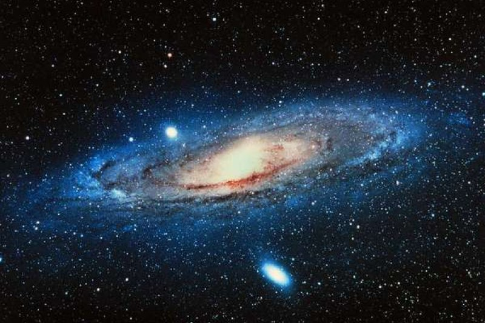

探索星空
星空，是人类对未知宇宙的窗口。凝望夜空，我们不仅仅是在看一片黑暗的幕布，而是在欣赏数百万年光年外的恒星、星系和其他天体。宇宙的浩瀚让我们渺小，但也激励我们去探索那无穷无尽的奥秘。
关于银河系
银河系是一个巨大的旋涡星系，包含超过2000亿颗恒星，其中包括我们的太阳。我们位于银河系的一个旋臂上，距离中心约2.6万光年。银河系的直径约10万光年，结构复杂，分为核心、盘状区域和周围的光晕。
在晴朗的夜晚，远离城市光污染的地方，银河带横跨夜空，形成一条璀璨的星河。银河系不仅是我们星球的家园，也承载着无数关于宇宙起源的奥秘，是科学家们不断探索的目标。